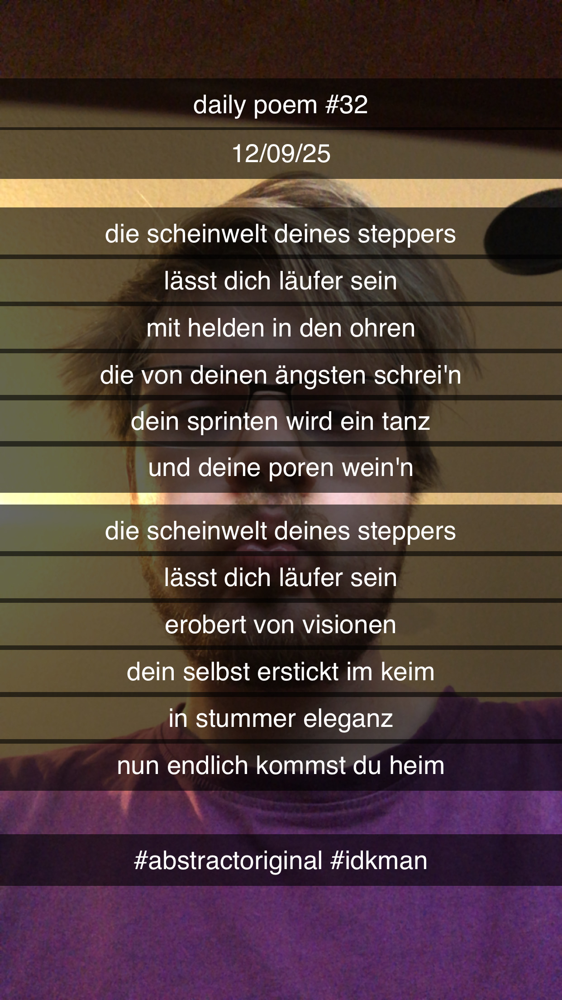

Die Scheinwelt deines Steppers
[32]Die Scheinwelt deines Steppers
Lässt dich Läufer sein –
Mit Helden in den Ohren,
Die von deinen Ängsten schrei'n;
Dein Sprinten wird ein Tanz,
Und deine Poren wein'n.
Die Scheinwelt deines Steppers
Lässt dich Läufer sein –
Erobert von Visionen,
Dein Selbst erstickt im Keim;
In stummer Eleganz
Nun endlich kommst du heim.
